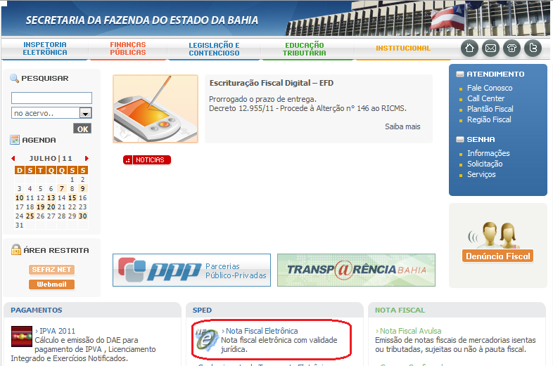
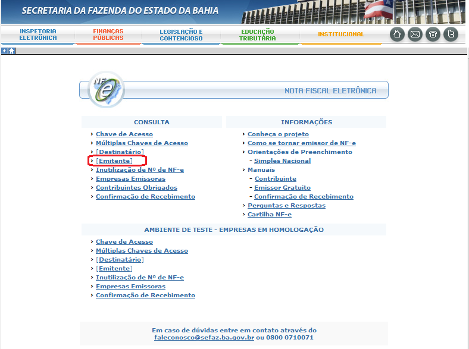
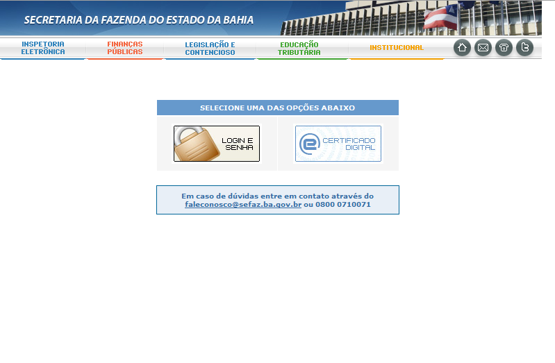
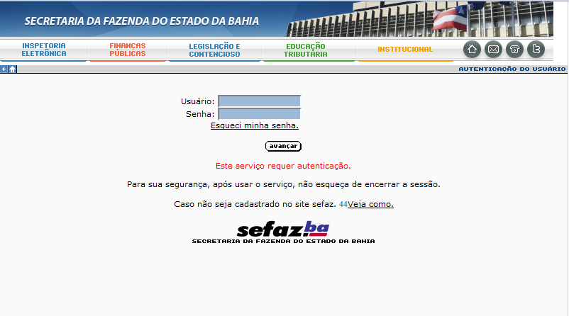
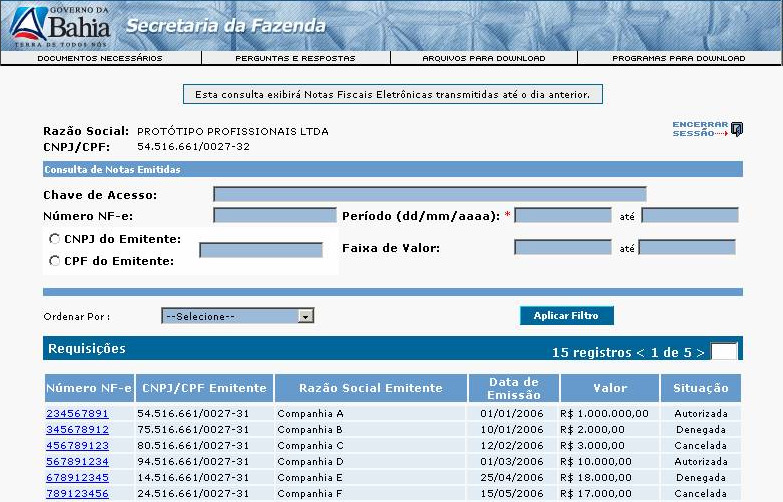
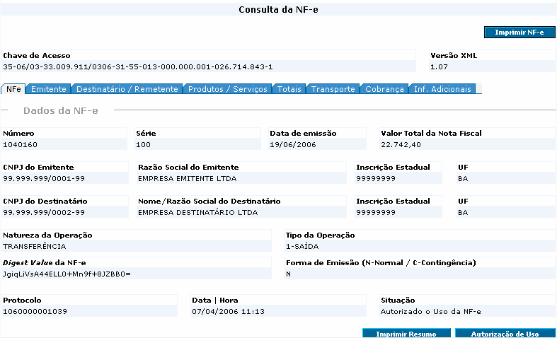

Consulta NFe no Sefaz |
  
|
Consulta NFe no Sefaz |
|
O módulo de acesso contribuintes às informações da NF-e?
É um canal de acesso, através da Internet, onde o contribuinte da Sefaz/Ba pode consultar as seguintes informações sobre Notas Fiscais Eletrônicas (NF-e):
1.
●NF-e emitidas pela empresa;
●NF-e recebidas pela empresa;
●Consulta da NF-e a partir da chave de acesso informada no DANFE;
●Empresas baianas emissoras de NF-e;
●Empresas obrigadas a emitirem NF-e no Estado da Bahia;
●Faixa de inutilização da números de NF-e.
Obs. As duas primeiras consultas são restritas e só podem ser acessadas com a senha de acesso à Internet disponibilizada para a empresa.
Como acessá-lo?
Através do site www.sefaz.ba.gov.br, serviço “Nota Fiscal”:

Após clicar no ícone descrito acima, o contribuinte terá acesso à seguinte tela:

As consultas de chave de acesso da NF-e a partir do Documento Auxiliar da NF-e (DANFE), inutilização de números de NF-e, empresas emissoras e obrigadas, são abertas.
As consultas de NFe recebidas pela empresa (destinatário) e emitidas (emitente), são restritas e só podem ser realizadas com senha ou certificado:

Login e Senha

Como obter a senha de acesso?
Caso o contribuinte ainda não possua a senha de acesso, este pode solicitá-la através do próprio site da Sefaz:
Já tenho senha, como posso acessar as informações de minhas NF-e emitidas e recebidas?
A partir da informação do login e senha, o contribuinte pode acessa as informações de suas NF-e emitidas/recebidas, através das seguintes opções de seleção:
1.
●Chave de acesso;
●Número da NF-e;
●Período;
●Faixa de Valor, e
●Por CNPJ da empresa emitente da NF-e, no caso das NF-e recebidas de fornecedores.

Após a seleção o contribuinte pode acessar os detalhes da NF-e clicando sobre o número da NF-e:

Em caso de dúvidas, consulte o Call Center através do telefone 0800.071.0071 ou envie mensagem para o faleconosco@sefaz.ba.gov.br.